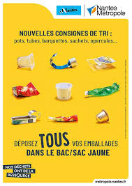
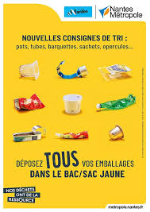

La poubelle jaune
La poubelle jaune sert à recycler les emballages en plastique, métal et carton. Par exemple : bouteilles en plastique, boîtes de conserve, cartons de boissons. Pense à bien vider et à écraser tes emballages !!!
 🏠page d'accueilLa poubelle jaune sert à recycler les emballages en plastique, métal et carton. Par exemple : bouteilles en plastique, boîtes de conserve, cartons de boissons. Pense à bien vider et à écraser tes emballages !!!
 🏠page d'accueil